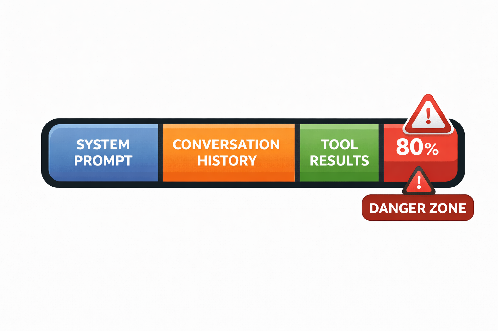
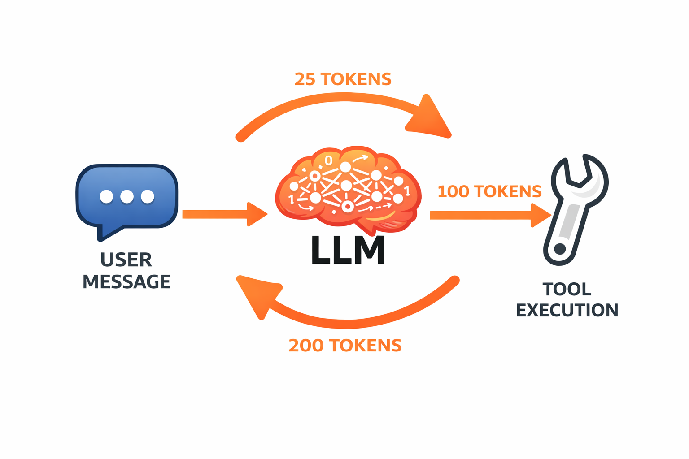
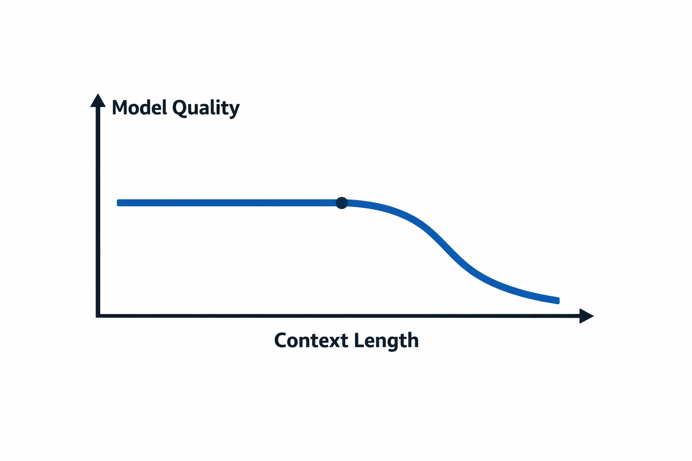

class: center, middle, inverse count: false # Measuring and Managing Context --- # Making Context Visible In Lecture 3.4, we defined context engineering — curating the smallest possible set of high-signal tokens. That's the principle. This lecture is about **measurement.** - How fast does the context window fill during an agent task? - Where do the tokens come from? - When does quality start to drop? .callout[You can't manage what you can't see.] ??? Bridge from 3.4's conceptual definition to practical observation. This module makes the abstract concrete. --- # What the API Tells You Every API response includes a `usage` field: .small-code[ ```python response = client.messages.create( model="claude-sonnet-4-6", max_tokens=1024, messages=[{"role": "user", "content": "Explain recursion in two sentences."}] ) *print(f"Input: {response.usage.input_tokens} tokens") *print(f"Output: {response.usage.output_tokens} tokens") # Input: 15 tokens # Output: 42 tokens ``` ] - **Input tokens** — everything you sent: system prompt + history + tool results + current message - **Output tokens** — everything the model generated in this response - Both reported per call — you track them yourself across a session ??? Students saw response.usage briefly in 3.1. Now we focus on what the numbers mean and why they matter. --- # Why Input and Output Tokens Cost Differently Output tokens cost **3-5x more** than input tokens. The reason is architectural: -- **Input tokens** — processed in **parallel**. The entire input is known upfront, so the model handles all tokens in a single forward pass. -- **Output tokens** — generated **sequentially**. Each token requires its own forward pass, because each depends on all previous tokens (autoregressive generation, from Lecture 2.1). -- Sequential = more GPU compute per token = higher price. .info[One forward pass for all input. One forward pass *per output token*.] ??? Brief but worth covering — connects LLM mechanics from Module 2 to practical cost. Don't belabor it. --- # A 10-Step Agent Task .split-left[ <p></p> ] .split-right[ User asks: **"Fix the bug in parser.py"** .small[ 1. System prompt — **500 tokens** 2. User message — **10 tokens** 3. Read `parser.py` — **+800 tokens** 4. Read test file — **+600 tokens** 5. Propose edit — **+200 tokens** 6. Edit confirmation — **+50 tokens** 7. Re-read file to verify — **+800 tokens** 8. Run tests — **+400 tokens** 9. Read error output — **+300 tokens** 10. Another edit + re-read — **+1,500 tokens** ] **Running total: ~5,160 tokens** from one request. ] <div class="clear"></div> ??? The accumulation is the point. Note step 7 — the agent reads the same file twice, and both copies sit in context. This motivates management strategies in 4.2. --- # Where Do the Tokens Come From? .split-left[ **Typical agent session breakdown:** - **System prompt:** 5-10% - **User messages:** 2-5% - **Assistant responses:** 15-25% - **Tool results:** 50-70% Tool results dominate. The agent reads files, runs commands, searches codebases — and every result stays in context for the rest of the session. ] .split-right[ <p></p> ] <div class="clear"></div> .callout[Tool results are the largest source of context growth. This is why token-efficient tool design (covered next) matters.] ??? Percentages are approximate but directionally correct. The key insight: tool results are the biggest lever. Sets up 4.3. --- # Live Demo: Watching Context Grow .small-code[ ```python # Simulate a multi-step agent task, tracking tokens after each step messages = [] for i, user_msg in enumerate(steps, 1): messages.append({"role": "user", "content": user_msg}) response = client.messages.create( model=MODEL, max_tokens=1024, system=system_prompt, messages=messages ) messages.append({"role": "assistant", "content": response.content[0].text}) * cumulative_input += response.usage.input_tokens * cumulative_output += response.usage.output_tokens * print(f"Step {i}: input={response.usage.input_tokens}, " * f"cumulative_input={cumulative_input}") ``` ] Watch the **input token count climb** with each step — the entire conversation history is re-sent every time. ??? Run context_growth.py. The climbing input count is the demonstration. Each call re-sends everything, so input tokens grow even though the user said one thing. --- # The Context Window Is Not a Goal .split-left[ Models advertise 128K or 200K token windows. Those are **ceilings, not targets.** - The hard limit is the maximum the model accepts - Quality degrades **well before** the limit - More context = attention spread thinner = less focus - Quality holds steady, then **drops sharply** .info[The "Lost in the Middle" finding (Liu et al., 2023): models attend more to the beginning and end of long contexts, with weaker recall for information in the middle.] ] .split-right[ <p></p> ] <div class="clear"></div> ??? The Lost in the Middle reference is a footnote, not a deep dive. Practical takeaway: don't fill the window just because you can. --- # Setting a Context Budget A context budget is a threshold — when context reaches X% of the window, take action. ```python MAX_CONTEXT = 200_000 # model's limit BUDGET = int(MAX_CONTEXT * 0.80) # 160,000 tokens if response.usage.input_tokens > BUDGET: # Time to manage context — strategies in the next lecture print(f"Budget exceeded: {response.usage.input_tokens}/{BUDGET}") ``` - **80%** is a reasonable default threshold - At 80%, you still have room to operate — but it's time to act - The specific strategies (summarize, drop, compact) are the next lecture .warning[Decide your threshold before you need it. Retroactive context management is harder than proactive.] ??? The code is trivial — that's the point. The strategies (what to do when you cross) are 4.2's topic. Here we're establishing that you need a budget and how to check it. --- # Why Not Just Use the Biggest Window? Three reasons to keep context small: **Cost** — you pay per input token on every call, and the full conversation is re-sent each time **Quality** — attention degrades with length; a 50K-token context often outperforms a 150K-token context for the same task **Latency** — more input tokens = longer time to first output token .callout[The goal is the smallest context that contains everything the model needs. Not the biggest context you can afford.] ??? Echoes the context engineering definition from 3.4 — "smallest possible set of high-signal tokens." Now students understand *why* in concrete terms. --- # Instrument From Day One Add token tracking when you build the agent, not after problems arise. ```python # Simple per-call logging — add this to every agent # Later (Modules 17-18) this becomes a proper TokenTracker class print(f"[tokens] in={response.usage.input_tokens} " f"out={response.usage.output_tokens} " f"total={response.usage.input_tokens + response.usage.output_tokens}") ``` What to track: - Input and output tokens **per call** - **Cumulative** input tokens across the session (your growth curve) - When you **cross your budget threshold** .info[This is a print statement today. Later, it becomes a proper abstraction in your agent framework.] ??? Keep it simple — a print statement is sufficient at this stage. Mention the framework path so students know this evolves. --- # Key Takeaways **1. Every API call reports token usage** — input and output, tracked per call **2. Tool results dominate context growth** — 50-70% of tokens in a typical agent session **3. Quality degrades before the hard limit** — set a budget, don't fill the window **4. Measure from the start** — you can't manage context you can't see --- # Next Up You can now see context growing and know when you're approaching the limit. Next: **what to do about it** — sliding windows, selective preservation, and compaction. ??? Transition to 4.2. The measurement foundation is set; now students need the strategies.